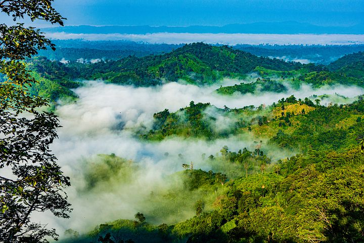

Cox's Bazar is a town on the southeast coast of Bangladesh. It's known for its very long,
sandy
beachfront, stretching from Sea Beach in the north to Kolatoli Beach in the south. Aggameda
Khyang
monastery is home to bronze statues and centuries-old Buddhist manuscripts. South of town,
the
tropical
rainforest of Himchari National Park has waterfalls and many birds. North, sea turtles breed
on
nearby
Sonadia Island.
Sajek

Pic: This is Sajek
Sajek valley is known for its natural environment and is surrounded by mountains, dense
forest,
and
grassland hill tracks. Many small rivers flow through the mountains among which the
Kachalong
and
the
Machalong are notable. On the way to Sajek valley, one has to cross the Mayni range and the
Mayni
river.